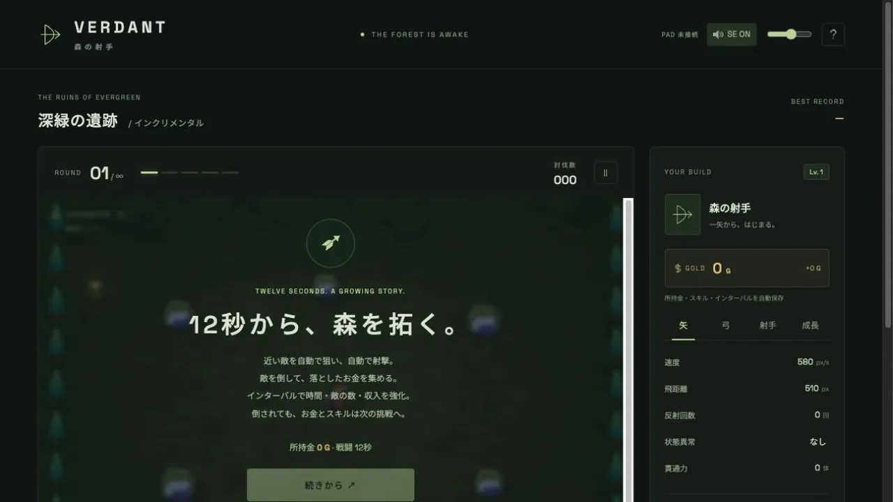
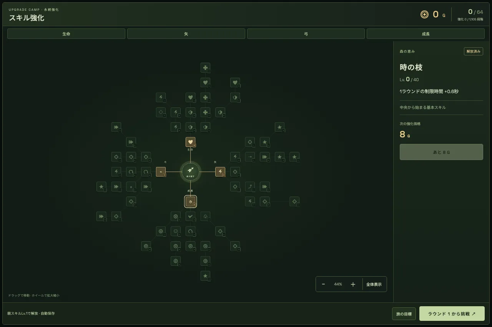
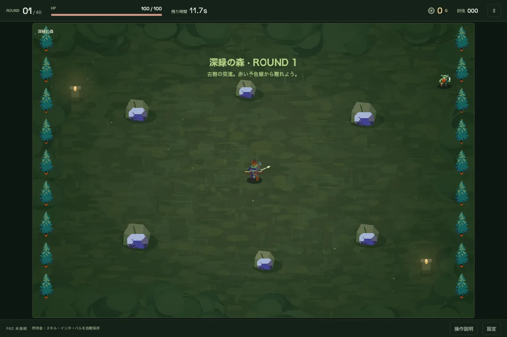
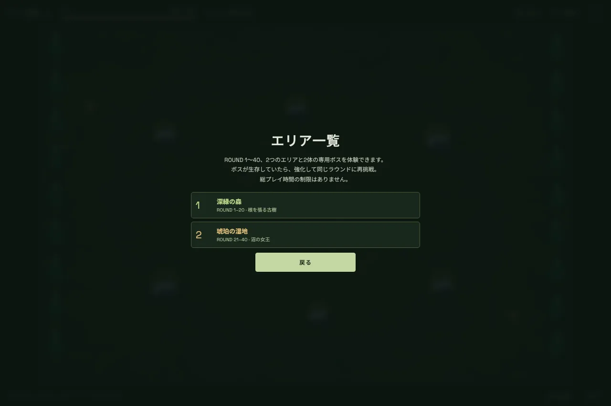
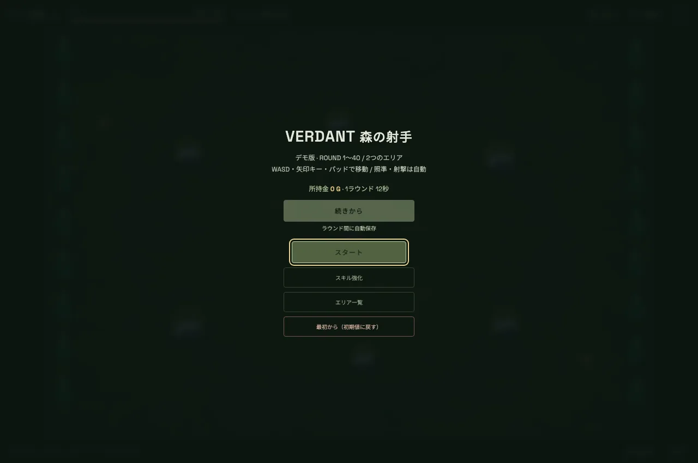

12秒から、 森を拓く。
照準と射撃は自動。敵の攻撃を避け、拾ったゴールドで弓を鍛える。貫通・跳弾・複射で、一本の矢を画面いっぱいの矢の嵐へ。短い戦いと永続強化を重ねる、見下ろし型インクリメンタル弓アクションです。

撃つ手は要りません。要るのは、どこに立つか。
動いて、集める
矢は自動で飛びます。敵の間を抜けてゴールドを拾い、弾幕や範囲攻撃を回避。強化して敵を一掃し、先のラウンドで壁に当たったら、周回してもう一段強くなりましょう。
12秒を、伸ばしていく
最初の制限時間は12秒。時間延長のスキルで戦闘時間を伸ばすことも、攻撃や収入を先に育てることもできます。短いラウンドを繰り返し、自分のペースで強化します。
倒されても、無駄にならない
倒されても、所持金と購入済みスキルは引き継ぎます。未回収のゴールドは失いますが、稼ぎやすいラウンドへ戻って強化し、また先へ挑めます。
製品版は87種のスキル。
中央の射手を起点に、生命・矢・弓・成長の4方向へ枝が伸びます。射つ速さ、矢の数、跳ね返り、毒や凍結、入るお金。どれを先に伸ばすかで、同じラウンドの通り方が変わります。ラウンドの合間にいつでも開けて、取った分は自動で保存されます。

スキル強化の画面。ドラッグで動かし、ホイールで拡大縮小できます
深緑の森から、琥珀の湿地へ。



3人の射手、5つのエリア。
バランス型のアレン、身軽なリナ、威力に秀でたガルド。製品版では3人の射手を選び、5エリア・全100ラウンドへ挑みます。87種のスキルで育て方を選び、ボスの弾幕を抜け、カカシのボーナスステージでゴールドを稼ぎましょう。日本語を含む9言語に対応。2026年12月24日発売予定です。
Steamでも、ブラウザでも。
- ROUND 1〜40。深緑の森と琥珀の湿地、専用ボス2体
- ラウンドを繰り返して稼ぎ、スキルを永続強化。総プレイ時間の制限なし
- Steam版はWindows / Mac対応。ブラウザ版はインストール不要
- キーボード・ゲームパッド・画面上のスティックに対応
- ラウンド間に自動保存。ブラウザ版のセーブは同じブラウザに保存
無料
Steam（Windows / Mac）、itch.io、unityroomで公開中。
Steamでダウンロード itch.io で遊ぶ unityroom で遊ぶ通常プレイはROUND 40まで。クリア後も強化を引き継いで再挑戦でき、未強化でROUND 20から始めるチャレンジモードも解放されます。チャレンジは通常プレイと別セーブです。